Beginnen
TapeDesk is een bandrecorder met vier tot zes tracks en een geluidsengine, voor iPhone en iPad. Is het je eerste keer, begin dan hier.
Wat je nodig hebt
Je hebt een iPhone of iPad met iOS 17 of nieuwer nodig. Op de iPhone staat de app rechtop, op de iPad kan hij elke kant op. Je neemt op met de microfoon van het apparaat zelf of met een audio-interface via USB. Je hebt geen account nodig en hoeft je nergens te registreren.
De eerste keer dat je de app opent, laadt hij een voorbeeldband die demo heet, met vier tracks opgenomen op 120 BPM. Je kunt hem veranderen of wissen zoals elke andere band.
De app vraagt om drie toestemmingen: de microfoon om op te nemen, het lokale netwerk om andere apps met Link te vinden en Bluetooth om een MIDI-controller te koppelen. Er worden geen gegevens verzameld.
De twee modi
Kies recorder of groovebox in instellingen ▸ toepassing ▸ modus. recorder geeft je de band en de mix. groovebox voegt de synth en het scherm track toe, waar je tegelijk speelt en opneemt. Van modus wisselen laat je banden ongemoeid.
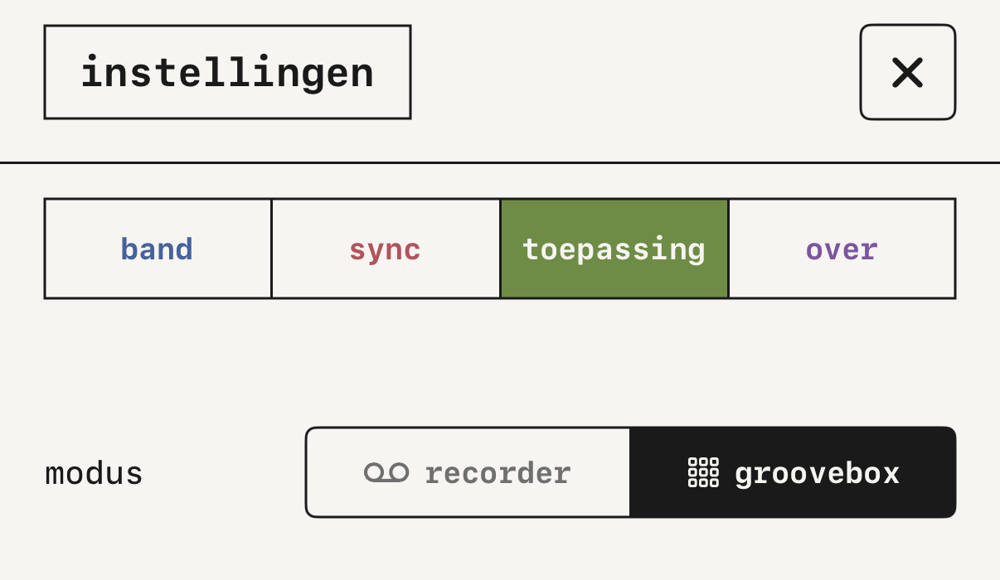
modus in de instellingen van de app.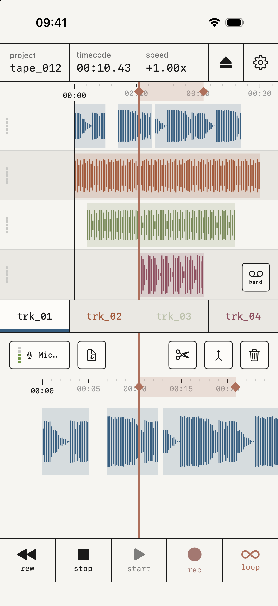
recorder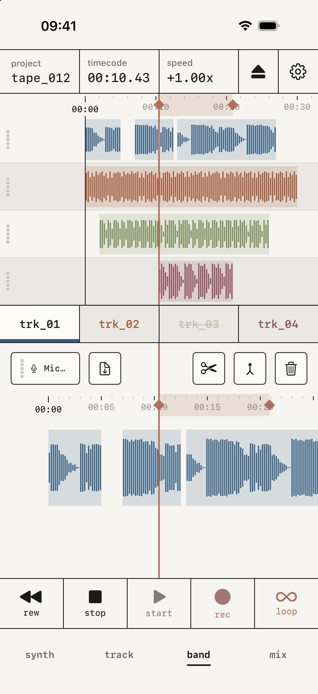
grooveboxHet scherm
Van boven naar onder heeft het bandscherm de kopbalk, de hele band, de gearmde track in het groot en het transport.
In de kopbalk opent project je banden, het uitwerpicoon de export en het tandwiel de instellingen.
Via de onderste rij kom je bij de vier plekken: synth · track · band · mix.
Er is geen rij met plekken. De schakelaar in de hoek, met de metronoom erboven, brengt je van de band naar de mix en terug.
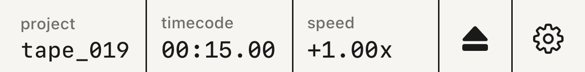
project, timecode en speed.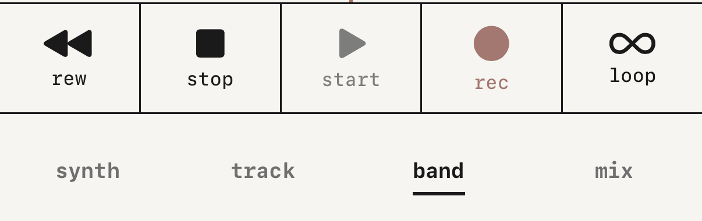
Je eerste opname
- Tik op het tabje van een track om hem te armen.
- Druk op
rec. Staat de band stil, dan hoor je eerst aftellen. - Druk op
stopals je klaar bent. - Druk op
rewom terug naar het begin te gaan en opstartom te luisteren.
Dat is een opname. De rest leer je wel als je het nodig hebt.
Opnemen
Armen en opnemen
Tik op het tabje van een track om hem te armen. Elke track heeft zijn eigen kleur, en alleen de gearmde track neemt op, tenzij bronnen aan staat.
Druk op rec om op te nemen en op stop om te stoppen. Staat de band stil, dan wordt eerst afgeteld in je maatsoort. Je zet dat uit met aftellen in instellingen ▸ band.
Neem je over een opname heen op, dan worden de twee opgeteld en klinken ze allebei. Dat is dub, de fabrieksinstelling. Wil je dat stuk liever vervangen, zet opnamemodus dan op wissel in dezelfde instellingen.
Blijft er een noot hangen, tik dan twee keer op stop: de eerste tik stopt de band en de tweede kapt alles af wat nog klinkt.
dub legt de twee opnames over elkaar en wissel vervangt het stuk.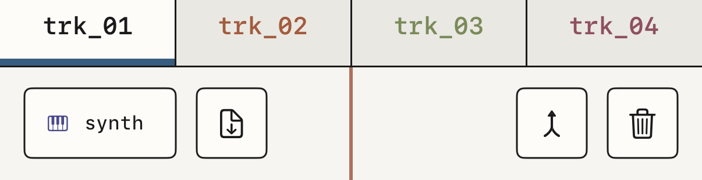
Een opname die vanzelf begint
Houd rec ingedrukt en er verschijnt een drempelfader, van −60 tot 0 dB. De opname begint vanzelf zodra de ingang erboven komt, wat handig is als je alleen opneemt en de telefoon buiten bereik ligt.
rec vasthouden, een klap, en de opname begint vanzelf.Tracks
Een band heeft vier tot zes tracks. Op de iPhone begint hij met vier en op de iPad met zes, en je verandert het met tracks in instellingen ▸ band. Er passen 128 regio's in een track en 10 minuten op een band.
Zou je bij het verlagen een track met opnames weghalen, tik dan twee keer op hetzelfde getal om te bevestigen. Daarna verschijnt ongedaan onder tracks, en dat zet de hele track terug.
Live looper
Met een actieve loop neemt rec op over wat er klinkt zonder het te wissen, één laag per ronde. Druk je op stop, dan worden alle lagen samen één loop.
De drempel werkt hier ook. Houd rec ingedrukt, laat de fader staan waar je hem wilt, en de laag begint bij de eerste klap. Wat je vlak voor de drempel speelde, blijft bewaard.
Met bronnen aan neemt elke ronde alle tracks uit het raster op. Zie meerdere ingangen tegelijk opnemen.
Meerdere ingangen tegelijk opnemen
Elke track kan in dezelfde ronde zijn eigen bron opnemen. Een bron is de synth, de microfoon van de telefoon of een kanaal van een USB-audio-interface, dus ook zonder interface heb je er twee: de synth op de ene track en je stem op een andere.
Tik op de ingangsknop om het monitorpaneel te openen en druk op bronnen in de rij bron. Het raster bron → track gaat open. Tik op een track en daarna op de bronnen die hij moet opnemen. Druk je op rec, dan nemen alle tracks met een bron tegelijk op, en bij stop houdt elke track zijn eigen regio. Met de loop en met de drempel werkt het net zo.
- Een kanaal van de interface kan naar meerdere tracks, en een track kan meerdere kanalen ontvangen.
- De synth staat maar op één track. Zet je hem op een andere, dan verhuist hij.
- Een track neemt de synth of de ingang op, nooit allebei.
- Tik nog eens op een gearmd tabje om die track op
safete zetten. Hij laat zijn bron nog zien, maar neemt bij de volgende ronde niet op. - De kanalen van de interface komen binnen zonder extra versterking, dus stel hun niveau op de interface zelf in.
- Wil je de synth en je stem samen opnemen, luister dan op een koptelefoon met snoer. Zie waar het geluid binnenkomt.
Het raster wordt met de band bewaard en komt terug als je hem opent terwijl dezelfde ingang is aangesloten. Wil je weer één bron opnemen, tik dan op synth of ingang in dezelfde rij.
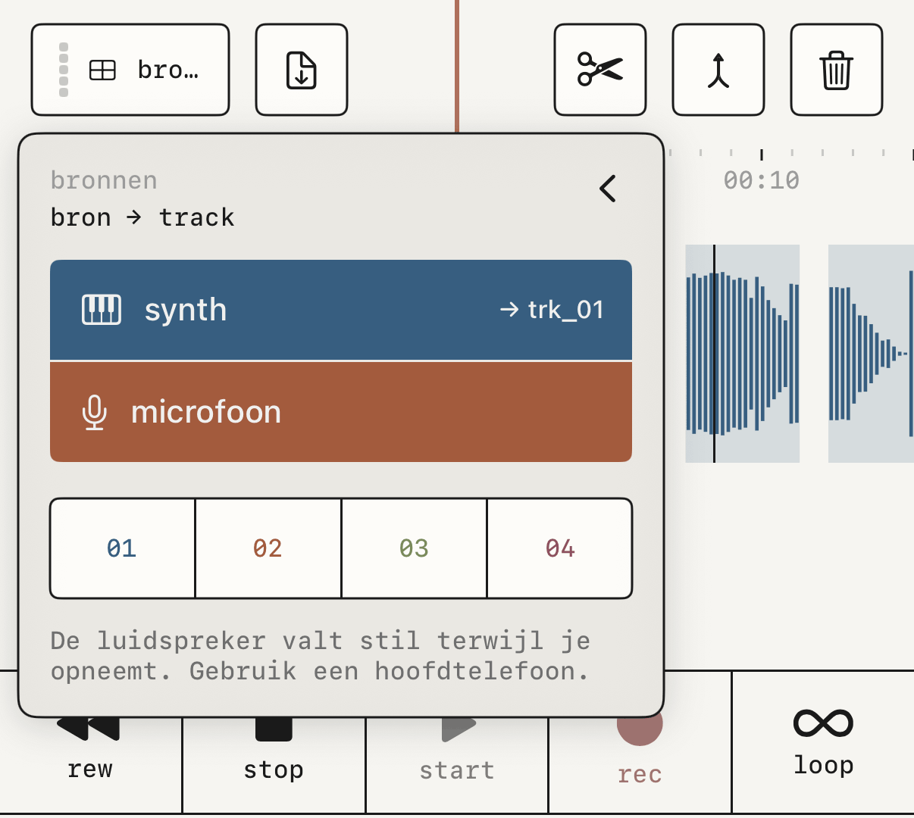
trk_01 en de microfoon op trk_02.De synth opnemen groovebox
Op het scherm track speel je de synth en neem je hem op: bovenaan de tabjes van de tracks, onderaan het klavier en in het midden de opname van de gearmde track.
Wat rec opneemt, hangt af van het scherm: de synth in synth en track, de ingang in band en mix. Je verandert het vanaf elk scherm met synth of ingang in de rij bron van het monitorpaneel, bijvoorbeeld om vanaf de band de synth op te nemen terwijl je een MIDI-keyboard bespeelt. De ingangsknop laat altijd zien wat rec gaat opnemen: het woord synth, of de naam van het apparaat en zijn meter.
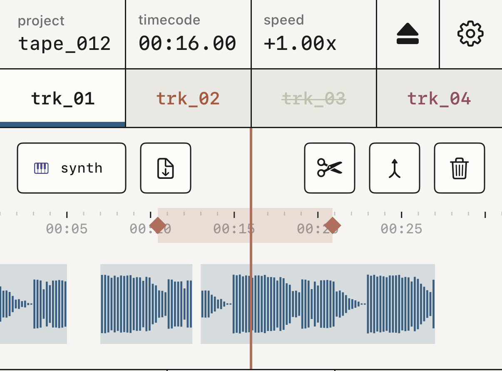
track, met het gearmde tabje en de opname groot.bron van ingang naar synth zetten.Waar het geluid binnenkomt
iOS kiest de ingang: de microfoon van het apparaat tot je een interface aansluit, en vanaf dan de interface.
Via Bluetooth komt wat je hoort ongeveer 200 ms te laat, en een opname die je daarop inspeelt, valt niet meer gelijk te leggen. Luister tijdens het opnemen op een koptelefoon met snoer.
Neem je op met de microfoon van de telefoon en luister je via de speaker, dan valt de uitgang stil tijdens het opnemen, zodat de microfoon niet oppikt wat er speelt. Met een koptelefoon hoor je alles.
Wordt de app midden in een opname afgesloten, dan biedt hij de volgende keer dat je hem opent aan om de opname te herstellen. Een telefoontje of Siri zet de engine stil, en de opname wordt tot dat punt bewaard.
Snelheid en loop
Snelheid
Tik op speed in de kopbalk en er gaat een verticale fader open, met 1.00x in het midden, 2.00x bovenaan en 0.25x onderaan. De toonhoogte volgt de snelheid, zoals op een bandrecorder.
Het slot onder de fader bepaalt wat er gebeurt als je loslaat. Staat het open, dan gaat de snelheid terug naar 1x. Staat het dicht, dan blijft hij staan waar je hem liet en wordt hij met de band bewaard.
Een opname die op een andere snelheid is gemaakt, speelt ook op die snelheid af.

Over de band bewegen
rew gaat terug naar het begin. Zolang je start ingedrukt houdt, spoelt rew snel vooruit.
Sleep de gearmde track om de afspeelkop te verplaatsen. Met de band stil volgt hij je vinger zoals een plaat, en met de band in beweging buigt de snelheid van het slepen de toonhoogte.
Tijdens het slepen geeft elk streepje op de liniaal een zacht tikje, en genummerde maten, de randen van de regio's op de gearmde track en de uiteinden van de loop geven een steviger tik.
Loop
Sleep de grepen op de liniaal om te bepalen waar de loop begint en eindigt, tot maximaal de hele band. Op de naad zit een korte fade.
Heb je een regio geselecteerd, dan past loop in de bewerkbalk de loop aan die regio aan.
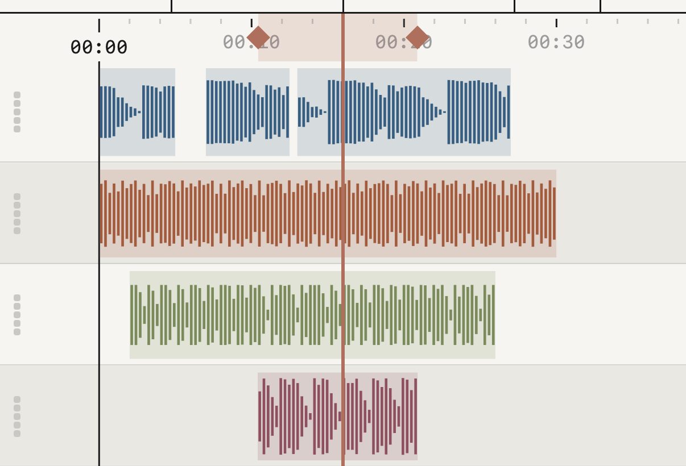
Bewerken
Elke opname is een regio.
De bewerkbalk
Tik op een regio om hem te selecteren en de bewerkbalk verschijnt, met alleen de toetsen die op dat moment zin hebben.
lifthaalt de regio van de band en houdt hem vast.dropzet hem neer bij de afspeelkop, op de gearmde track. Zet hem nog eens neer om kopieën achter te laten.join←en→joinvoegen hem samen met de regio links of rechts ervan.revdraait hem om, en een kleine◁laat zien dat hij achterstevoren speelt.looppast de loop aan de regio aan.undoenredowerken per track.

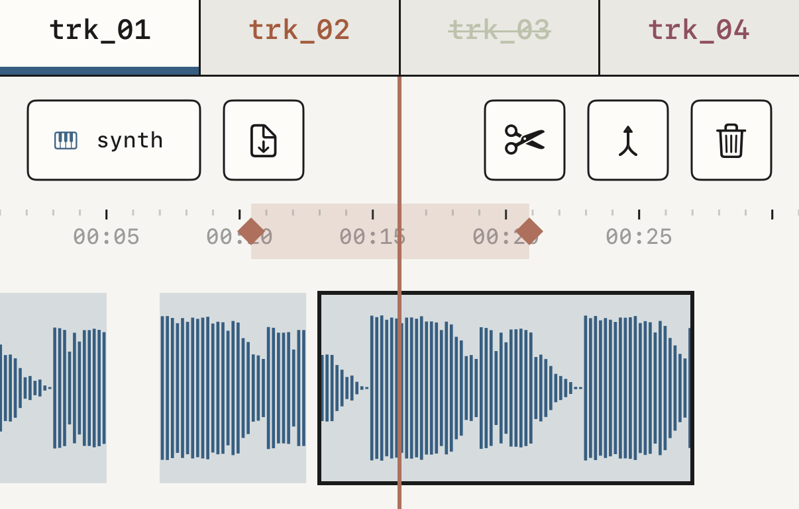
Gereedschap van de track
De rij onder de tabjes van de tracks heeft vier gereedschappen.
- De ingangsknop opent het monitorpaneel.
- Het documenticoon importeert een audiobestand in de track.
- De schaar knipt de regio door bij de afspeelkop.
- De prullenbak maakt de gearmde track leeg, en
undozet hem terug.
Twee tracks samenvoegen
bounce voegt twee tracks samen tot één om een track vrij te maken. Met printen, de fabrieksinstelling, worden de fader, de pan en de twee sends van de brontrack in de audio vastgelegd, en gaan die knoppen terug naar hun neutrale stand, zodat ze niet twee keer werken.
Synth groovebox
De synth heeft elf synthese-engines, een sampler en een drumstel. Je speelt hem met keys, chords of seq.
Een klank kiezen
Tik op het vakje bovenaan met de engine en de preset om de browser te openen, met de engines links en hun presets rechts. Bovenaan staan de drie families, synth · sampler · au, en de ster op klank, die de klanken per instrument groepeert en je favorieten en mappen bewaart.
Tik op een preset en hij wordt meteen geladen, terwijl de browser open blijft. Met dubbeltikken laad je hem en sluit je de browser. Zou je gesamplede klanken verliezen die je nog niet hebt bewaard, dan vraagt hij het eerst.
bewaren slaat de huidige klank op als nieuwe preset. Houd een eigen preset ingedrukt voor hernoem, knippen of wis. De ster maakt hem favoriet. Een puntje naast de naam betekent dat je de klank hebt veranderd en nog niet hebt bewaard.
De klank van elke track
Weet je niet meer met welke preset je een track hebt opgenomen, de band weet het wel. Elke keer dat je de synth op een track opneemt, bewaart de band de klank die toen speelde.
Je vindt hem in op klank, in een map met de naam van de band, met een rij per track. Neem je opnieuw op die track op, dan wordt hij vervangen.
Deze klanken horen bij de band: andere banden laten ze niet zien, en ze worden samen met de band gewist. Wil je er een houden, laad hem dan en bewaar hem met bewaren als preset.
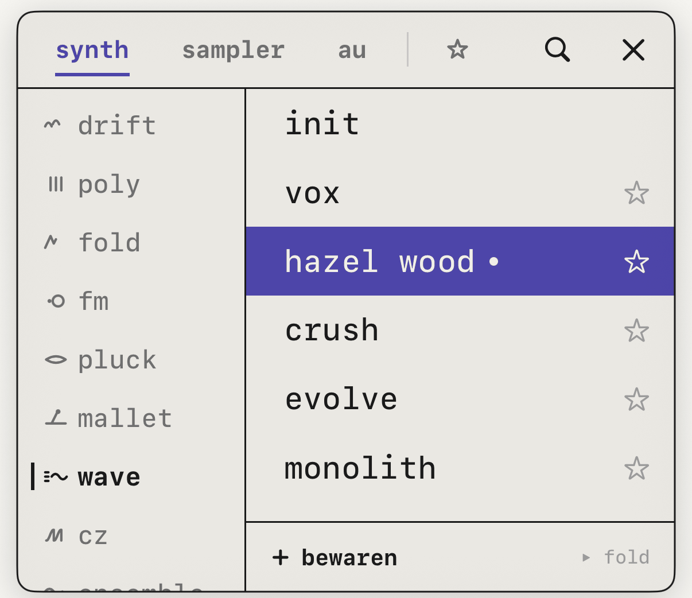
De klank vormen
Onder de naam van de klank staan vijf tabjes, elk met twee rijen knoppen.
synthheeft bovenaan de vier macro's van de engine, en onderaanvoice(poly·mono·legato),glideenlevel.adsrtekent twee envelopes, een voor het volume en een voor het filter.filterheeft cutoff en resonantie in één curve, het filtertype en hoeveel de envelope het filter beweegt.lfoheeft twee LFO's. Tik opdesten daarna op de knop die hij moet bewegen. Houddestingedrukt om de koppeling weg te halen.fxis het eigen effect van de engine, los van de effecten in de mix.
Alle knoppen staan in de kaarten van de engines en de fx-inserts.
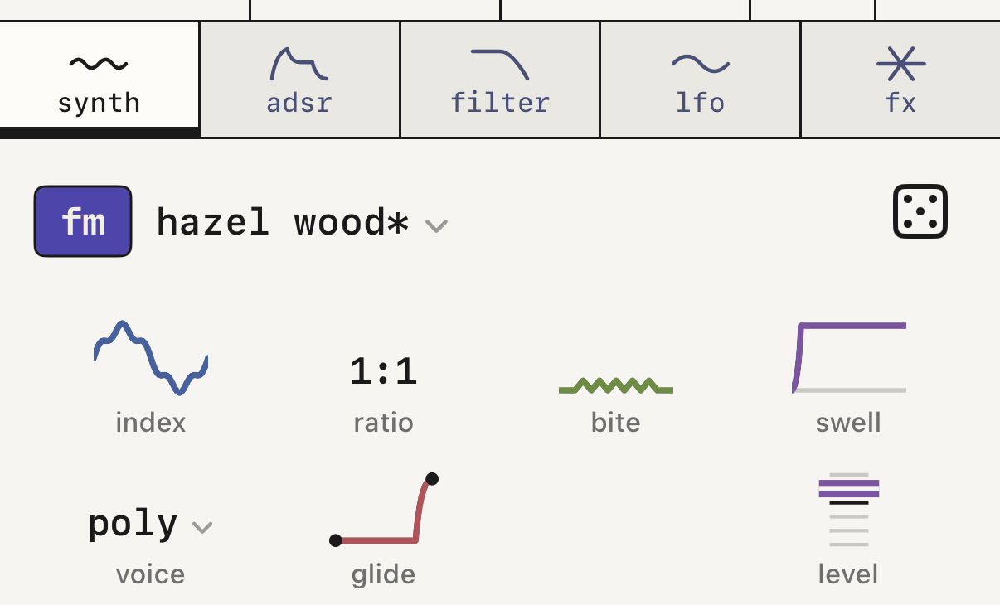
synth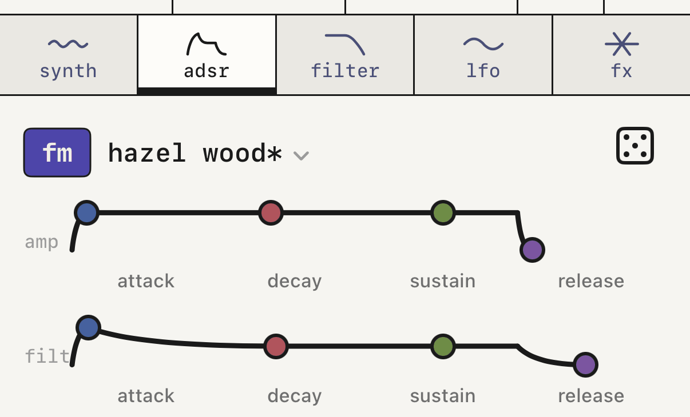
adsr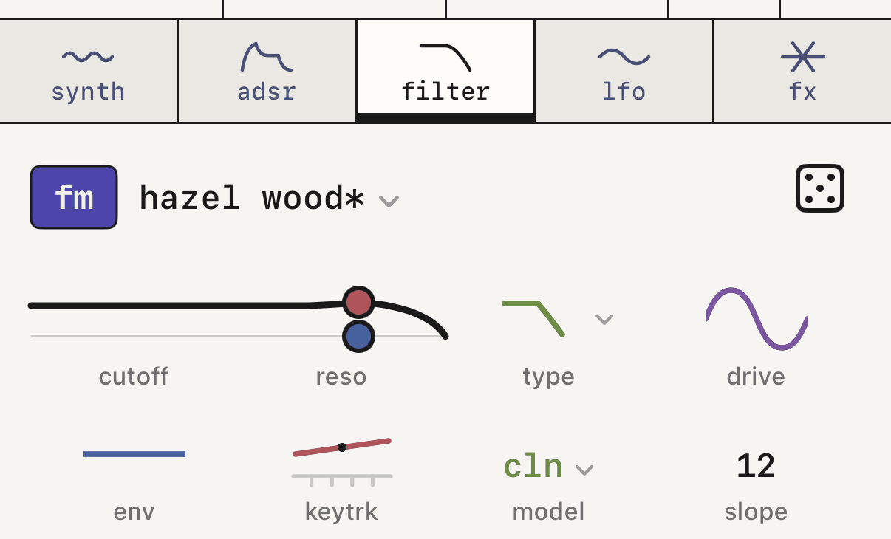
filter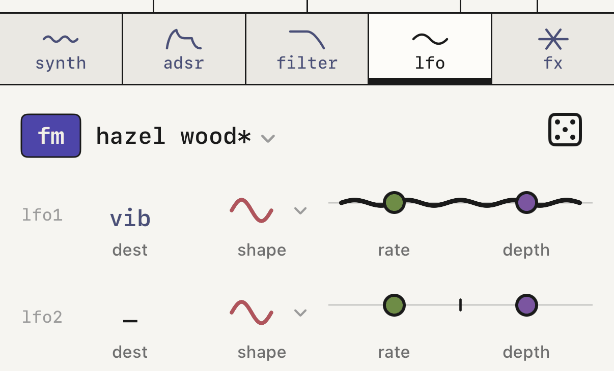
lfoKeys
Het klavier speelt alleen de noten van de actieve toonladder, die je er vlak boven kiest met grondtoon en toonladder. Er zijn 14 fabriekstoonladders, en je kunt je eigen maken vanuit het toonladdermenu. − en + wisselen van octaaf.
Hoe hard een noot klinkt, hangt af van hoe stevig je drukt en van de tik die de telefoon oppikt, of van de druk met Apple Pencil. Wil je dat elke noot even hard klinkt, zet aanslag dan op 0 in de instellingen van de app.
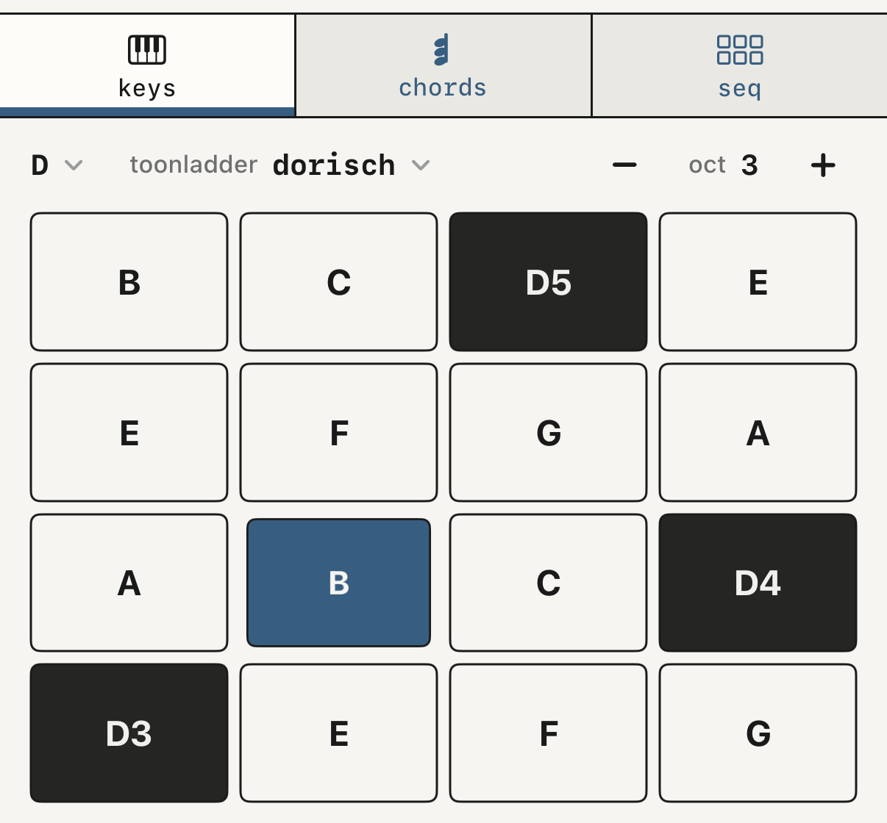
keys, met de grondtoon, de toonladder en het klavier.Chords
chords zet een akkoord op elke pad, in twee modi.
In toonladder zijn er acht pads, één per trap van de toonladder. Houd een modifier zoals 7, 9 of sus vast en de pad die je aantikt krijgt een ander akkoord. Tik je een modifier aan en laat je hem los zonder een pad aan te raken, dan blijft hij aan tot je hem opnieuw aantikt.
De akkoorden klinken gesloten, met de noten dicht bij elkaar midden op het klavier en zonder bas. Zet ze lager of hoger met − en +.
In eigen bouw je je eigen akkoorden op twee banken van acht pads. Tik op edit of op een lege pad. Elke noot die je op het klavier speelt, komt bij het akkoord, tot acht. Druk daarna op bewaren.
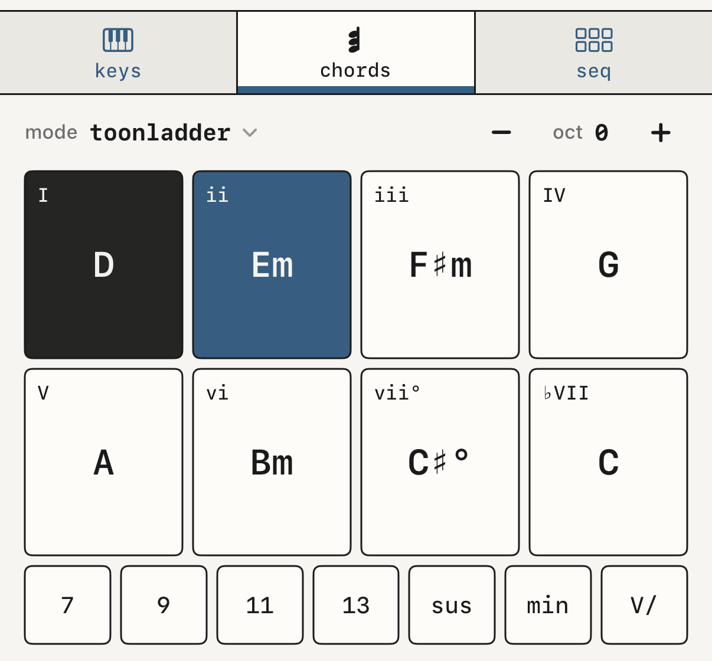
chords in toonladder, met de rij modifiers.Seq
seq heeft vijf standen, die je kiest met de naam linksboven: off · arp · step · ping · eucalyptus.
arparpeggieert wat je vasthoudt inkeysofchords, op een ring van 16 stappen.stepis een sequencer van maximaal 64 stappen, in pagina's van 16. Tik op een stap om erheen te gaan en te schrijven. Met dubbeltikken wis je hem.pingis een biljarttafel met bellen. Een tik zet een bel neer en een veeg schiet een bal weg. Elke bel die een bal kruist, klinkt. Pas op, het is verslavend.eucalyptusheeft een eigen sectie, hieronder.
Op off blijft bewaard wat je had, voor als je terugkomt.
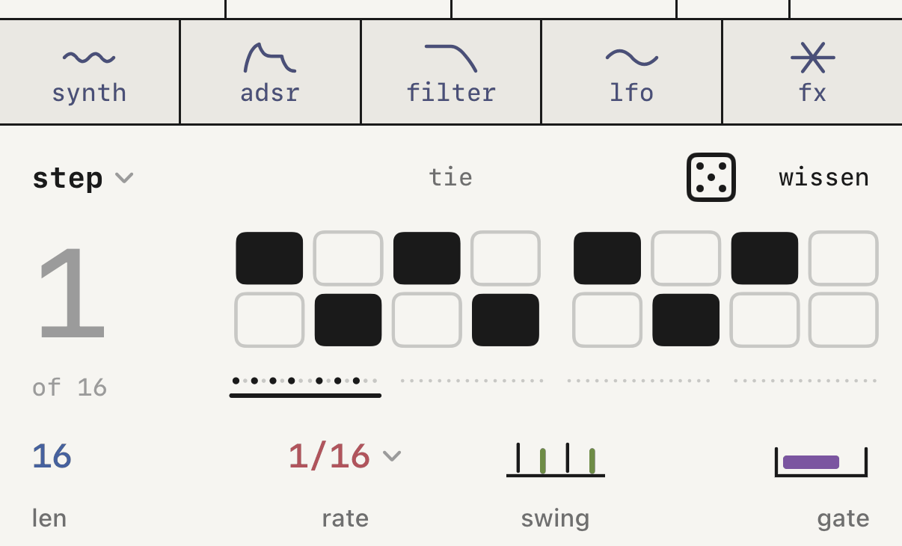
step met een paar geschreven stappen.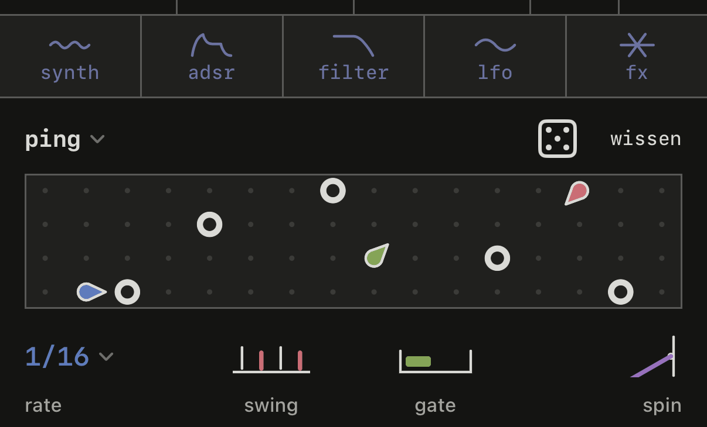
ping met ballen die tussen de bellen stuiteren.Eucalyptus
eucalyptus is een pianorol in een lus, geïnspireerd op de sequencer van Koala Sampler. Je vult hem door noten te spelen of te tekenen, en als het goed klinkt print je hem op de band.
Onder de rol staan vier toetsen.
runzet hem in gang.recschrijft wat je speelt inkeys,chordsofkitin de rol, en bij elke ronde komt er meer bij.lenbepaalt hoeveel maten hij duurt, in de maatsoort van de band.printenneemt hem op de band op.
Tik op de rol om hem groot te openen. Bovenaan staan loop, snap en quant, onderaan pen, vel, prob en undo. pen tekent noten, en vel en prob bepalen de kracht en de kans van elke noot. Knijp om te zoomen, en [] laat de hele rol weer zien.
printen neemt precies één ronde op de gearmde track op, vanaf de maatstreep die het dichtst bij de afspeelkop ligt. De band moet stilstaan. Print je twee keer achter elkaar, dan komt de tweede ronde direct na de eerste.
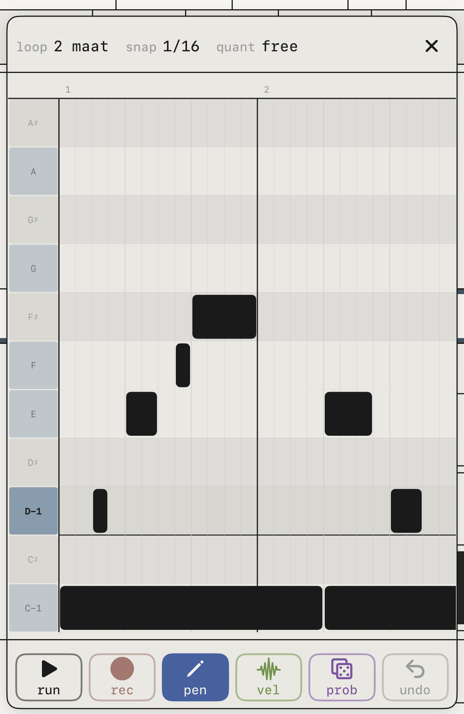
eucalyptus groot geopend, met loop, snap en quant bovenaan.Kit
kit is een drumstel met 24 pads in twee banken, A en B. Tik op een pad om hem te selecteren, en zijn geluid gaat bovenaan open met in · gate · norm · rev · cut.
Tik op een lege pad om een geluid te laden uit je map met geluiden, uit bestanden (audio of video), van de mic of van een track op de band.
chop hakt een geluid in stukken op de punten die je markeert en verdeelt de stukken over de vrije pads. Je kunt de knippen ook markeren door pads aan te tikken terwijl het speelt. norm brengt het volume van een geluid omhoog tot aan zijn piek.
Om een pad leeg te maken open je in en tik je op wissen, en undo zet het geluid terug. Verwijder je een geluid uit de bibliotheek, dan verdwijnt het overal, ook uit de pads en presets die het gebruiken.
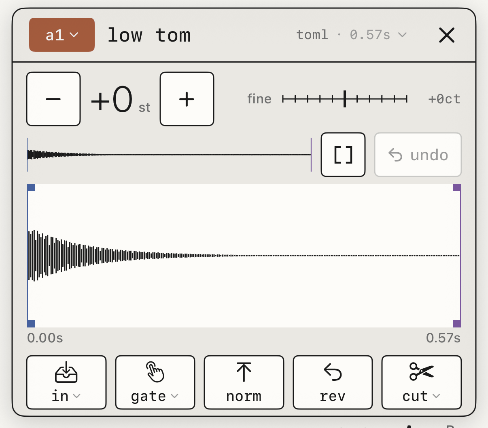
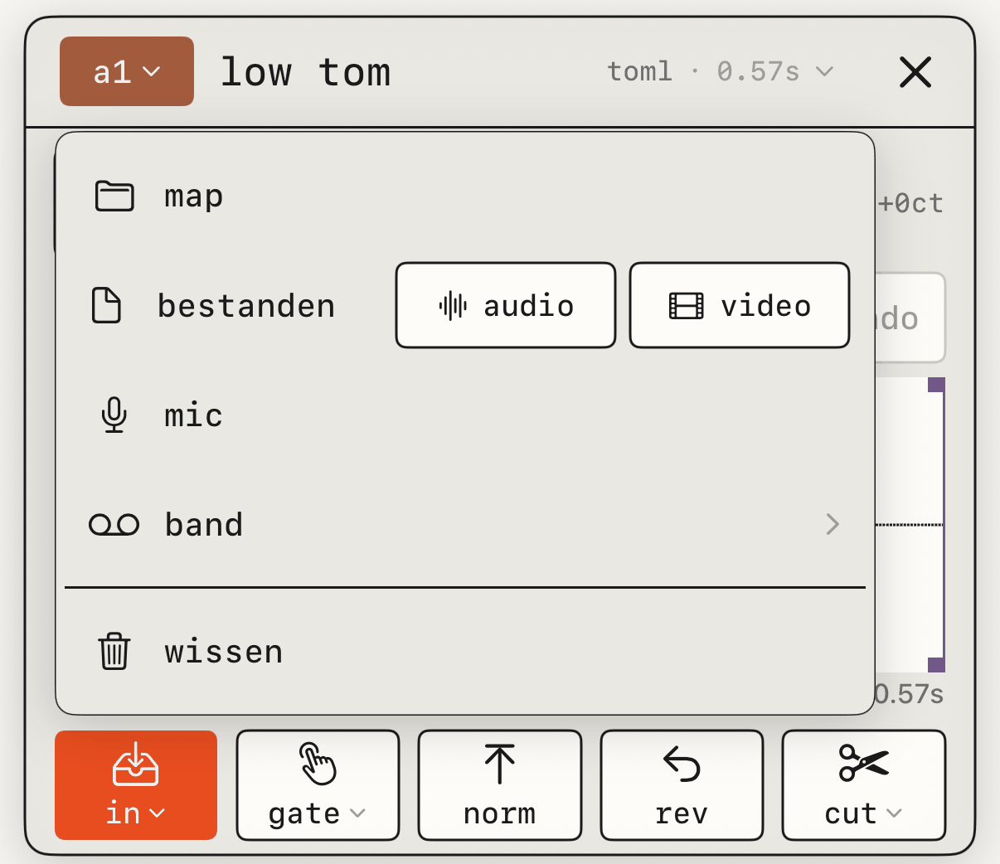
Mixen
De mix heeft vier tabjes: fx 1 · fx 2 · mix · eq.
Kanaalstrips
In mix staat een strip per track, en ze passen allemaal op het scherm.
inis de ingangsversterking als je één bron opneemt.panzet de track links of rechts.sd1ensd2sturen de track naarfx 1enfx 2.- De fader heeft zijn meter, en
mdempt de track.
Boven de strips duwt drive de hele mix tegen de limiter aan, van −12 tot +12 dB. Hoe hoger je hem zet, hoe compacter het klinkt.
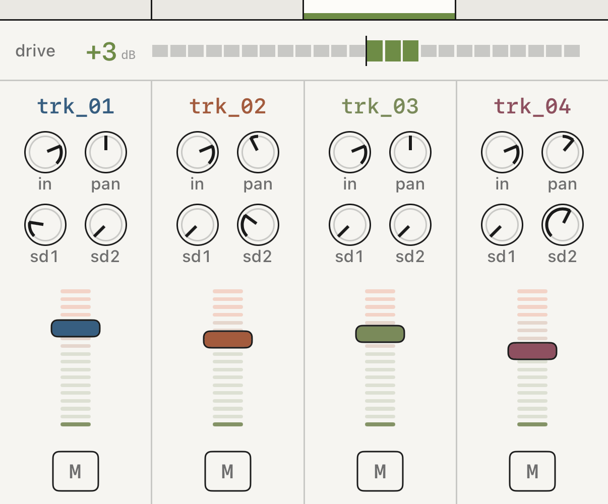
mix, met drive bovenaan.Effecten
fx 1 en fx 2 zijn twee gedeelde effecten, en elke track stuurt ernaartoe met sd1 en sd2. Tik op een lege bus om te kiezen uit tapesat · delay · reverb · crush · haze · wobble · shimmer, of plug-ins om een AUv3 uit een andere app te gebruiken.
Elk effect heeft vier knoppen van 00 tot 99. Sleep verticaal om er een te draaien en dubbeltik om hem terug te zetten. Bovenaan zet actief het effect uit zonder dat je iets kwijtraakt, stelt return het niveau in en ruilt wijzigen het voor een ander.
De meeste effecten komen erbij, en de track blijft klinken zoals eerst. crush, haze en wobble vervangen hem: hoe meer je stuurt, hoe minder je van het origineel hoort, en met de send helemaal open hoor je alleen het effect.
Terwijl je speelt, hoor je de gearmde track door zijn effecten. De opname wordt zonder effecten vastgelegd.
Alle knoppen staan in de kaarten van de mixeffecten.
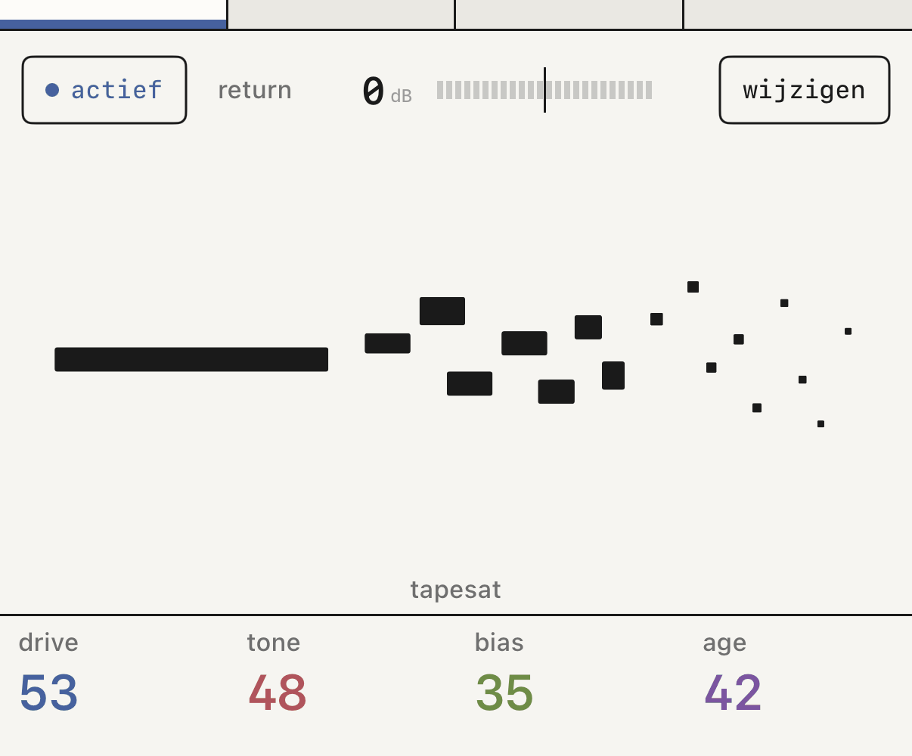
fx 1 met tapesat en zijn vier knoppen.Plug-ins van andere apps
Kies plug-ins op een bus om de AUv3-effecten te zien die je hebt geïnstalleerd, per fabrikant. ui openen opent het scherm van de plug-in, dat op de iPad in een zwevend venster verschijnt dat je van grootte kunt veranderen. Het tempo loopt vanzelf gelijk, en de stand van de plug-in wordt met de band bewaard.
Master-eq
eq is een curve over het hele scherm met vier vaste banden: low 150 Hz · body 400 Hz · pres 2.5 kHz · air 8 kHz. Sleep een band tot 8 dB omhoog of omlaag, en dubbeltik om hem weer vlak te zetten.
Knijp met twee vingers om alle vier de banden tegelijk te schalen. Een chip zet de hele eq uit en bewaart de curve.
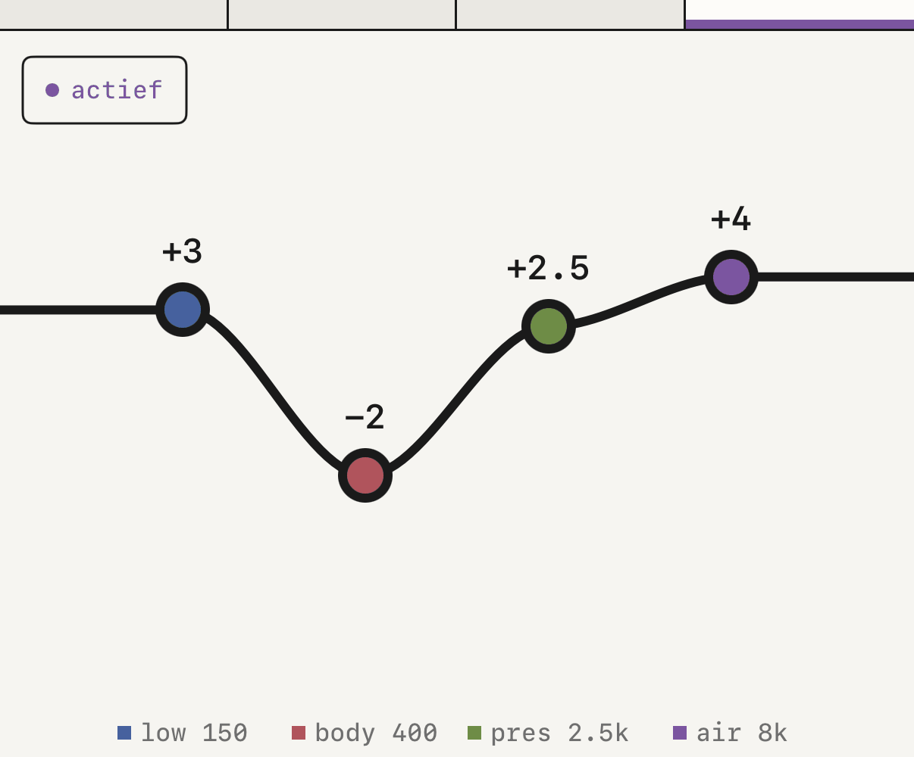
Waar het geluid langs gaat
Elke track gaat door zijn strip en zijn sends. Daarna komt alles samen en gaat het op weg naar de uitgang door drive, de eq en de limiter, dus wat je in de eq ophaalt, duwt ook tegen de limiter.
Banden en exporteren
Elk project is een band.
Je banden
Tik op project in de kopbalk om banden te openen. Daar maak je een nieuwe band, en in de rij van elke band kun je hem dupliceren, hernoemen of wissen. Wissen vraagt om bevestiging en kun je niet ongedaan maken.
Een band bewaart zijn tracks en zijn mix, het tempo, de maatsoort, de looppunten en de effecten. Een nieuwe band begint op 120 BPM, met het aantal tracks dat bij tracks staat.
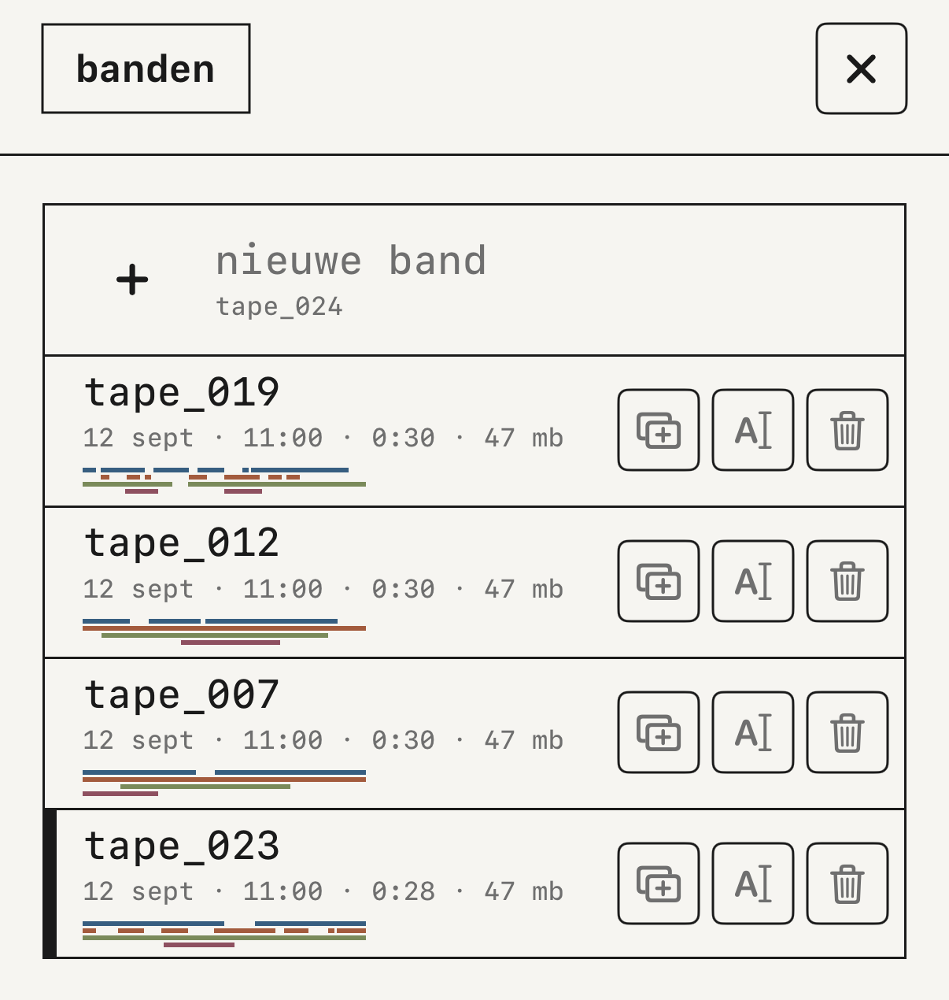
Exporteren
Tik op het uitwerpicoon in de kopbalk. Het paneel heeft drie keuzes.
uitgangismaster, de volledige mix, ofstems, een bestand per track.formaatiswav(24 bit, verliesvrij) ofm4a(gecomprimeerd).bereikis de helebandof één ronde van jeloop.
Druk op uitwerpen en het bestand gaat via het deelmenu van iOS naar Bestanden, AirDrop of een andere app.
De export klinkt hetzelfde als het afspelen. In master blijven gedempte tracks stil en werkt de limiter. In stems heeft elk bestand zijn volledige audio, ook als de track gedempt is, met de drive en de eq maar zonder de limiter.
Eindigt de band op een staart van reverb of delay, dan worden er tot 12 seconden extra geëxporteerd. In loop wordt tot 2 seconden van die staart over het begin gevouwen, zodat de ronde zonder sprong sluit.
De synth komt pas in de export als je hem op een track hebt opgenomen. Zie de synth opnemen.
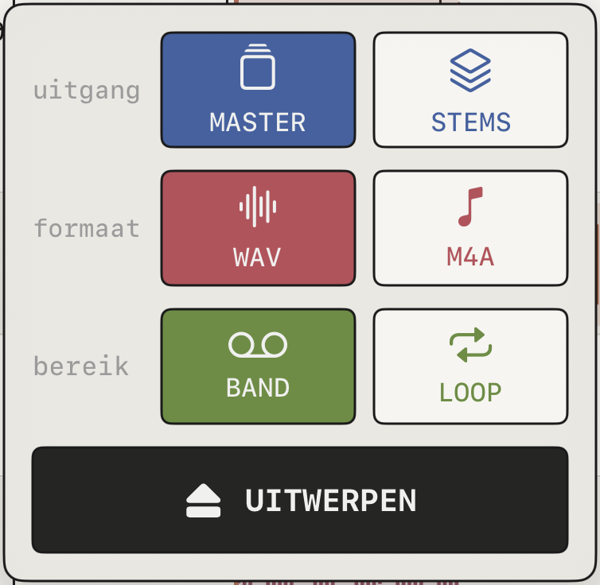
uitwerpen.Met andere apps
Het tempo synchroniseren
In instellingen ▸ sync heb je twee manieren om het tempo te delen.
midi-klok stuurt je tempo uit met uitgang of volgt dat van een ander apparaat met ingang, inclusief start en stop, via USB, Bluetooth of netwerk.
link opent het Ableton Link-paneel, zodat je in de maat speelt met andere apps op hetzelfde netwerk. Zolang link aan staat, staat midi-klok uit en op slot.
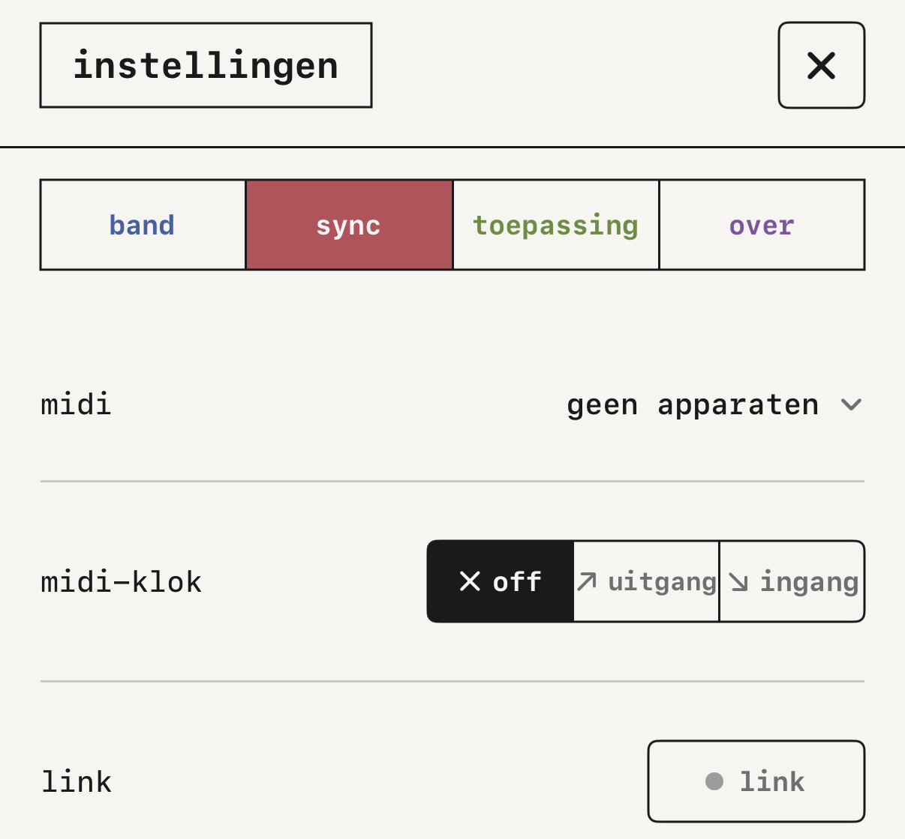
midi-klok en link in de sync-instellingen.MIDI learn
leren koppelt een knop van je controller aan bijna elk bedieningselement van de app: het transport, de faders, de pan, de sends, de mute, de knoppen van de effecten en de banden van de eq.
Zet het aan in instellingen ▸ sync ▸ midi, en elk koppelbaar element laat een plaatje set zien. Tik op een plaatje en draai aan de fysieke knop om hem te koppelen. Druk op klaar om eruit te gaan.
Ook de macro's van de synth en het doorstappen van de ene preset naar de volgende zijn te koppelen.
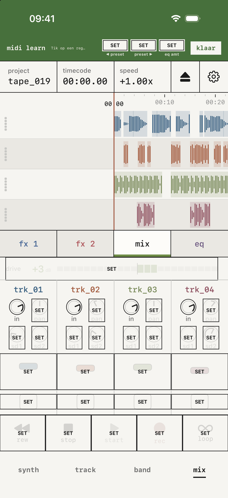
leren aan, met de plaatjes boven de mix.TapeDesk als plug-in
TapeDesk opent ook als AUv3-plug-in in een andere app. TapeDesk: Tape is de band met zijn mix, en de banden zijn dezelfde die je in de app ziet.
klok, bovenaan, heeft twee opties.
hostis de fabrieksinstelling. Druk oparmen de play van de host start de opname, op het tempo van de host.bandgeeft je het volledige transport en je eigen tempo.
Met host kun je de band nog steeds verplaatsen. Sleep hem naar waar je wilt en laat los, en vanaf daar start en stopt hij met de host. Dat helpt bij clip-hosts, die geen tijdlijn hebben en nooit naar nul teruggaan. Wissel je naar band en weer terug naar host, dan volgt de band de host opnieuw.
Met bronnen ontvangt de plug-in tot zes ingangen van de host, elk op de track die je kiest, en neemt hij ze allemaal tegelijk op, ook in de loop en met de drempel. Met direct hoor je de ingang van de host op de uitgang. De host kan de hele mix automatiseren.
TapeDesk: Tape in een host.TapeDesk: Play groovebox
TapeDesk: Play is de synth als instrument in een andere app. Hij ontvangt noten, sustain en pitch bend van de host, en biedt 37 parameters om te automatiseren.
De klank wordt met de sessie van de host bewaard. De presets, de toonladders en de DX-cartridges zijn dezelfde als in de app.
TapeDesk: Play in een host, met het klavier open.Kaarten
Dit deel is om dingen op te zoeken: de knoppen van elke engine en elk effect, de instellingen, het register en de licenties.
Engines groovebox
De elf synthese-engines zijn gebouwd op Plaits, van Émilie Gillet (Mutable Instruments). sample en kit spelen samples af.
drift
analoge zwerm, stereo
drift- van een stille zwerm tot een wolk die verandert
swarm- hoeveel stemmen
bloom- ontstemming naar het midden
spread- ontstemming naar de zijkanten, meer stereo
poly
virtueel analoog
shape- van warm tot een bijtende hard-sync-klank
fat- dikte van de zaagtand
tone- helderheid
voice- interval per stem, unisono, kwint, octaaf of octaaf plus kwint
fold
wavefolding
fold- hoeveel vouwing
shape- begingolfvorm
warp- onderaan warm, bovenaan metalig
motion- een trage LFO die de vouwing laat ademen
fm
FM met twee operators
index- van sinus naar bel en naar clang
ratio- interval tussen de operators, in stappen
bite- feedback, van schoon tot brom
swell- laat het geluid na de aanslag aanzwellen
pluck
getokkelde snaar, sterft vanzelf uit
pluck- helderheid van de tokkel
damp- hoe lang hij klinkt
tone- van warm tot metalig
body- resonantie van de klankkast
mallet
gestemde percussie, sterft vanzelf uit
strike- hardheid van de slag
ring- hoe lang hij klinkt
tone- van donker tot metalig
shimmer- glans van de hoge boventonen
wave
wavetable
scan- positie in de tabel
shape- familie van golfvormen
quant- van schoon tot lo-fi
evolve- loopt vanzelf door de tabel
cz
fasevervorming
peak- diepte van de resonantie
shape- vorm van het venster
harm- boventoon van de resonantie, in stappen
sweep- sweep van de formant bij elke noot
ensemble
string machine, stereo
ensemble- hoeveel chorus
register- van zaagtand tot blokgolf
air- hoe ver het filter opengaat per noot
vibrato- vibrato per noot
noise
ruis en textuur
grit- van krakende stapjes tot hiss
peak- resonantie van het filter
color- laagdoorlaat, banddoorlaat of hoogdoorlaat
gust- vlagen per noot die nooit hetzelfde zijn
dx
FM met zes operators, sterft vanzelf uit
patch- een van de 32 patches van de bank
mod- diepte van de LFO van de patch
bright- helderheid
stretch- rekt de envelopes op of drukt ze in
.syx-cartridges laad je met .syx importeren, in dx-cartridge.
sample
keyboard-sampler
note- de werkelijke toonhoogte van de sample
Tik op de golfvorm om hem bij te knippen en de loop te markeren.

Fx-inserts groovebox
Elke engine heeft een eigen effect in zijn tabje fx, dat binnen de klank werkt, noot voor noot.
chorus
rate- snelheid
depth- diepte
fbk- feedback, hol als hij negatief is en resonerend als hij positief is
voices- van 1 tot 4 stemmen
delay- basisvertraging, kort klinkt helder en lang klinkt als vibrato
width- stereobreedte
mix- mix
drive
dezelfde engine als tapesat
gain- hoeveel saturatie, met gecompenseerd volume
tone- filter na de saturatie
bias- asymmetrie
edge- nog meer saturatie
char- een andere asymmetrie-instelling
mix- mix
out- uitgangsniveau, ±12 dB
phaser
rate- snelheid van de sweep
depth- breedte van de sweep
fbk- resonantie, van luchtig tot vocaal
stages- van 2 tot 12 trappen
center- midden van de sweep
spread- faseverschil tussen links en rechts
mix- hoe uitgesproken de inkepingen zijn
delay
dezelfde engine als de delay in de mix
time- tot 1.2 s, of tempodelingen met
sync fbk- herhalingen
tone- maakt elke herhaling donkerder
pingpng- laat de herhalingen afwisselen tussen links en rechts
sync- koppelt
timeaan het tempo mod- bandgezwabber
mix- mix
space
dezelfde engine als de reverb in de mix
size- grootte
decay- lengte van de staart
damp- hoe de hoge tonen wegsterven
tone- helderheid
mod- gerinkel van een veer
mix- mix
dirt
fuzz
gain- ingang van de fuzz
fold- wavefolding
bias- meer fuzz aan de ene kant en stilte aan de andere
crush- verlaagt de samplefrequentie tot 300 Hz
tone- filter na de crush
mix- mix
out- uitgangsniveau, ±12 dB
au
een AUv3-effect van een andere app
return- niveau van het effect, ±12 dB
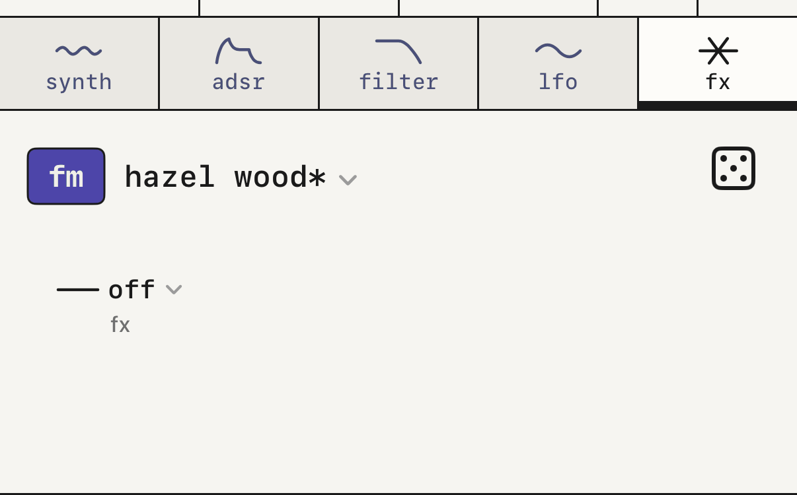
fx met space geladen.Mixeffecten
Dit zijn de effecten die je in fx 1 en fx 2 laadt.
tapesat
bandsaturatie, telt op
drive- hoe hard het signaal tegen de band duwt, met gecompenseerd volume
tone- afval van de hoge tonen, van 200 Hz tot 20 kHz
bias- asymmetrie, voegt even boventonen toe
age- van nieuwe band tot oude cassette, met hiss en daarna wow
delay
bandecho, telt op
time- van 30 tot 750 ms. Draai je eraan, dan glijdt de echo mee
fbk- herhalingen
tone- maakt elke herhaling donkerder
wow- gezwabber van de vertraging
reverb
acht lijnen met feedback, telt op
decay- lengte van de staart
tone- helderheid van de ruimte
drip- gerinkel van een veer
damp- hoe de hoge tonen in de staart wegsterven
crush
minder samplerate en minder bits, vervangt
rate- van 48 kHz tot 1.5 kHz
bits- van 16 tot 3
grit- van trapjes tot ruis
tone- hoogfilter
haze
bewegend filter, vervangt
freq- begincutoff, van 80 Hz tot 8 kHz
move- naar links beweegt het signaal hem, naar rechts een LFO
res- resonantie, gaat bij het maximum oscilleren
shape- van laagdoorlaat via banddoorlaat tot phaser
Met free gaat de LFO van 0.1 tot 8 Hz. Met sync volgt hij het tempo.
wobble
bandgezwabber, vervangt
depth- hoeveel de toonhoogte beweegt
rate- van 0.1 tot 8 Hz
shape- van sinus tot willekeurige wandeling
drop- dips in niveau en in hoog
shimmer
galm met een octaaf, telt op
shmr- hoeveel octaaf er weer in gaat
size- lengte van de staart
tone- van helder tot donker
bloom- hoe lang de wolk nodig heeft om op te komen
Eronder kies je het interval, van −12 tot +12. Standaard is het +12.
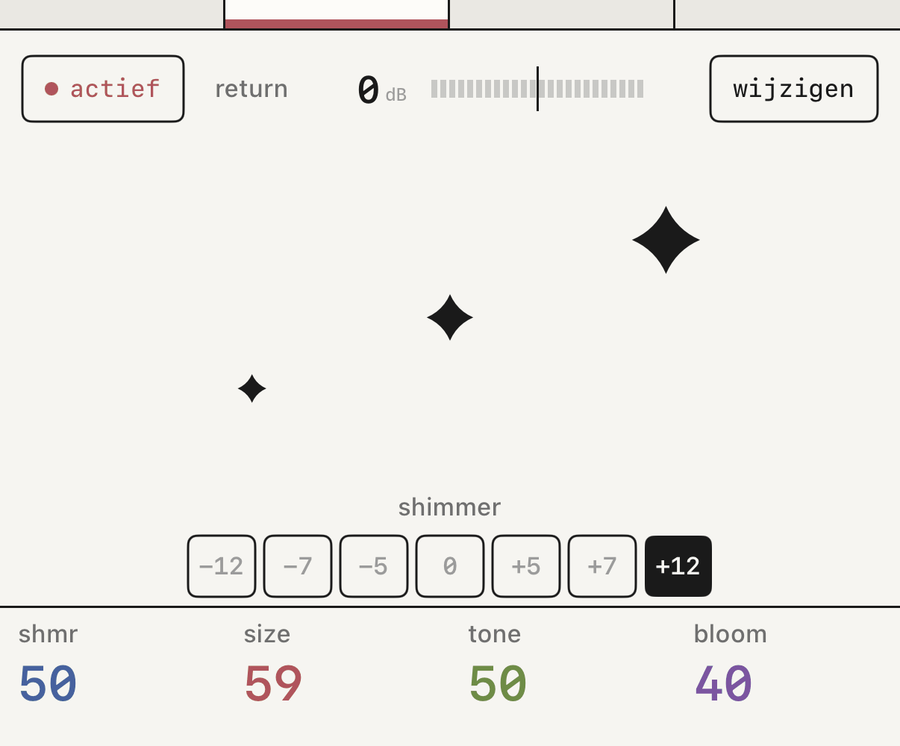
shimmer met de intervalkeuzes.Instellingen
Het tandwiel in de kopbalk opent de instellingen, met vier tabjes.
band
tracks- hoeveel tracks de band heeft, van 4 tot 6
tempo- met het wiel of door te tikken
maatsoort- maatsoort van de band
aftellen- aftellen voor het opnemen
metronoom- zet de klik aan
opnamemodusdubofwisselbewerkbalk- met welk gebaar hij opengaat
regio's- hoe de opnames getekend worden
sync
midi- apparaten,
leren,kanaal,seq,uitgangsoffset,draadloosenpaniek midi-klokoff·uitgang·inganglink- opent Ableton Link
toepassing
modusrecorderofgrooveboxthemalicht·donker·autoaanslag- hoeveel de slag meetelt als je toetsen en pads speelt, van 0 tot 5
taal- vijftien talen, wisselt meteen
microfoon- status van de toestemming
kwaliteitstudioneemt op in 24 bit endemoin 16, dat neemt minder ruimte inopslag- hoeveel ruimte TapeDesk inneemt
app-icoon- cream · dark · olive · wine
over
geen dataverzameling- linkt naar het privacybeleid
gids- opent deze handleiding
rate- om de app te beoordelen
support- om contact op te nemen
Onderaan staan de versie en de credits van de klanken en van Plaits.
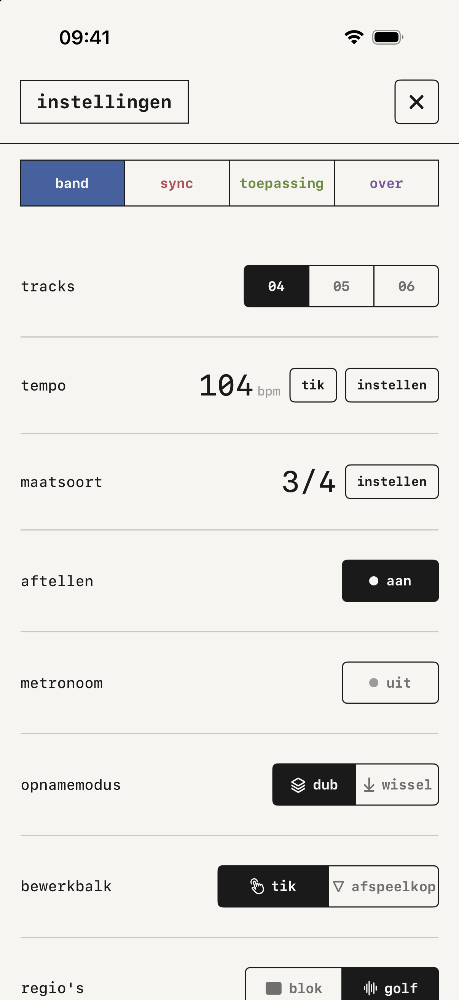
band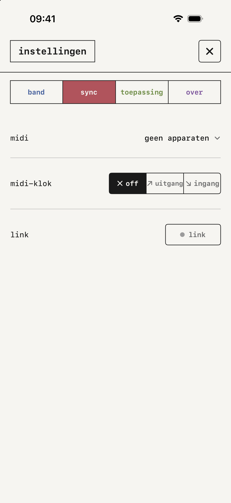
sync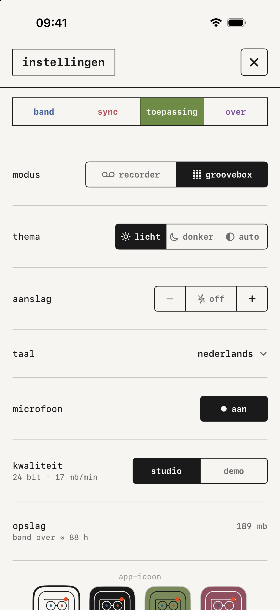
toepassing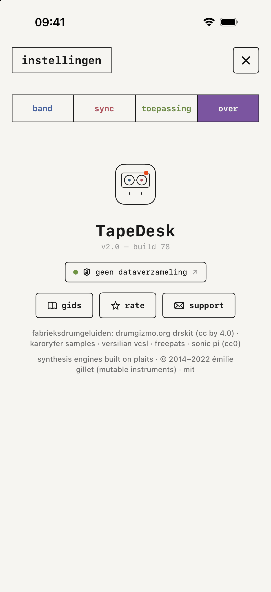
overRegister
actief· effectenaftellen· armen en opnemenarp· seqau· plug-ins van andere apps- audio-interface · meerdere ingangen tegelijk opnemen, waar het geluid binnenkomt
banden· je bandenbounce· twee tracks samenvoegenbron· de synth opnemenbron → track· meerdere ingangen tegelijk opnemenbronnen· meerdere ingangen tegelijk opnemen, TapeDesk als plug-inchop· kitchords· chordsdirect· TapeDesk als plug-in- drempel · een opname die vanzelf begint
drive· kanaalstripsdrop· de bewerkbalkdub· armen en opnemeneq· master-eqeucalyptus· eucalyptusfx 1enfx 2· effectengroovebox· de twee modiin· kanaalstripsjoin←en→join· de bewerkbalkkeys· keyskit· kit- klank van elke track · de klank van elke track
klok· TapeDesk als plug-inleren· MIDI learnlift· de bewerkbalklink· het tempo synchroniserenloop· loop, live loopermaster· exporterenmidi-klok· het tempo synchroniserenmix· kanaalstripsnorm· kitongedaan· tracksopnamemodus· armen en opnemenping· seqplug-ins· plug-ins van andere appsprinten· eucalyptusproject· je bandenrec· armen en opnemenrecorder· de twee modireturn· effectenrev· de bewerkbalkrew· over de band bewegensafe· meerdere ingangen tegelijk opnemenseq· seqspeed· snelheidstart· je eerste opnamestems· exporterenstep· seqstoptwee keer · armen en opnemensynth· een klank kiezenTapeDesk: Play· TapeDesk: PlayTapeDesk: Tape· TapeDesk als plug-intracks· tracksui openen· plug-ins van andere appsuitwerpen· exporterenundoenredo· de bewerkbalk- USB-audio-interface · meerdere ingangen tegelijk opnemen
wijzigen· effectenwissel· armen en opnemen
Licenties
De fabrieksgeluiden van kit komen van DrumGizmo.org DRSKit (CC BY 4.0), Karoryfer Samples, Versilian VCSL, FreePats en Sonic Pi (CC0).
De elf synthese-engines zijn gebouwd op Plaits, van Émilie Gillet (Mutable Instruments), onder de MIT-licentie. Copyright 2014-2022 Émilie Gillet. De licentie vraagt dat de tekst met het programma meereist, dus hier staat hij.
Permission is hereby granted, free of charge, to any person obtaining a copy of this software and associated documentation files (the "Software"), to deal in the Software without restriction, including without limitation the rights to use, copy, modify, merge, publish, distribute, sublicense, and/or sell copies of the Software, and to permit persons to whom the Software is furnished to do so, subject to the following conditions:
The above copyright notice and this permission notice shall be included in all copies or substantial portions of the Software.
THE SOFTWARE IS PROVIDED "AS IS", WITHOUT WARRANTY OF ANY KIND, EXPRESS OR IMPLIED, INCLUDING BUT NOT LIMITED TO THE WARRANTIES OF MERCHANTABILITY, FITNESS FOR A PARTICULAR PURPOSE AND NONINFRINGEMENT. IN NO EVENT SHALL THE AUTHORS OR COPYRIGHT HOLDERS BE LIABLE FOR ANY CLAIM, DAMAGES OR OTHER LIABILITY, WHETHER IN AN ACTION OF CONTRACT, TORT OR OTHERWISE, ARISING FROM, OUT OF OR IN CONNECTION WITH THE SOFTWARE OR THE USE OR OTHER DEALINGS IN THE SOFTWARE.